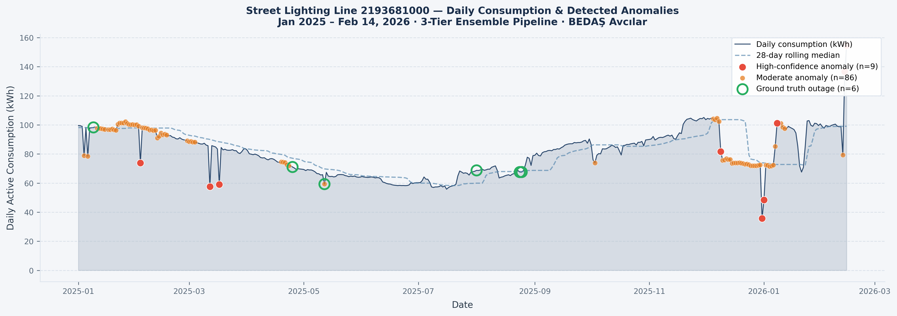

Pipeline Architecture
| Layer |
Method |
Purpose |
| Tier 1 |
STL + Modified Z-Score + CUSUM |
Statistical baseline |
| Tier 2 |
Isolation Forest (14 features) |
ML anomaly scoring |
| Tier 3 |
PELT Change-Point Detection |
Regime shifts |
| Ensemble |
Weighted Score Fusion |
0.35·S1 + 0.35·S2 + 0.30·S3 |
Results
410
Daily observations
Jan 2025 – Feb 14, 2026
9
High-confidence
anomalies detected
0.922
Bootstrap Jaccard
stability (5 seeds)
0.509
Silhouette score
(unsupervised)
Daily Consumption & Detected Anomalies · Jan 2025 – Feb 2026

Place 00_timeseries_overview.png here
'" />
Red dots = high-confidence anomalies · Orange = moderate · Green circles = ground truth outages · Data ends Feb 14, 2026